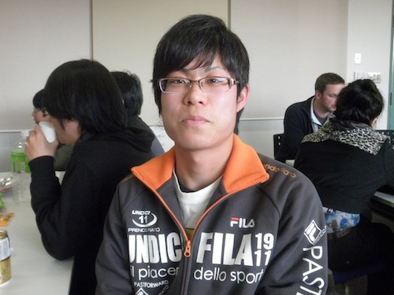

藁科 拓也

| 研究テーマ | 強磁性Ni(110)表面上のAu一次元量子ワイヤの電子状態 |
|---|---|
| 出身 | 静岡 |
| 国際学会 |
2. 学会名：2013 Japan-Korea Student Workshop 題目：Electronic Structure of One-dimensional Au Quantum-wrie on Ferromagnetic Ni(110) 場所：Pusan National University, Korea (2013.8) 口頭発表 1. 学会名：The 17th Hiroshima International Symposium on Synchrotron Radiation 題目：Electronic structure of one-dimensional Au quantum-wire on ferromagnetic Ni(110) 場所：Hiroshima Univ., Japan (2013.3) ポスター発表 |
| 受賞歴 |
2. 賞名：Best Student Poster Award The 17th Hiroshima International Symposium on Synchrotron Radiation 受賞年月：2013.3 1. 賞名：卒業論文発表優秀賞 受賞年月：2013.3 |